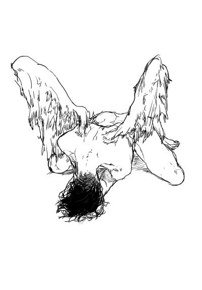

There's a japanese legend that says, If you feel like you're losing everything. Remember that trees lose there leaves every year and they still stand tall and wait for better days to come.
This is my story 
homepage
thirdpage